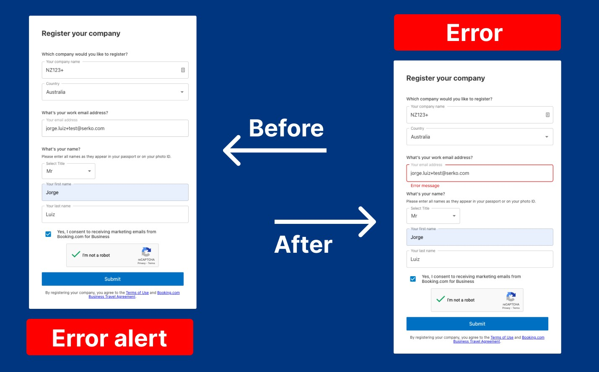
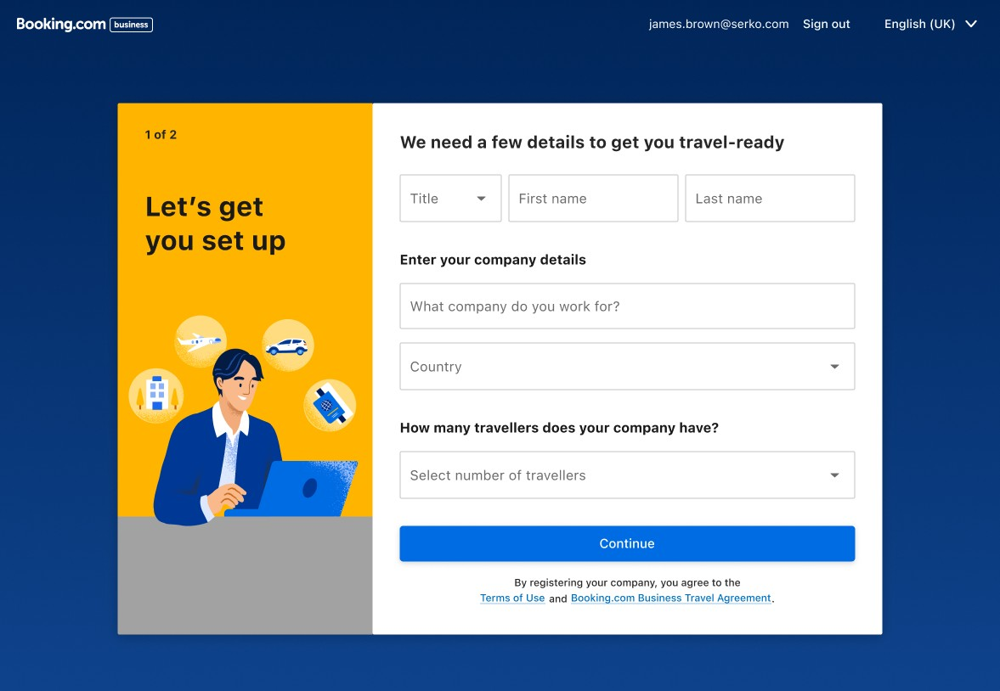
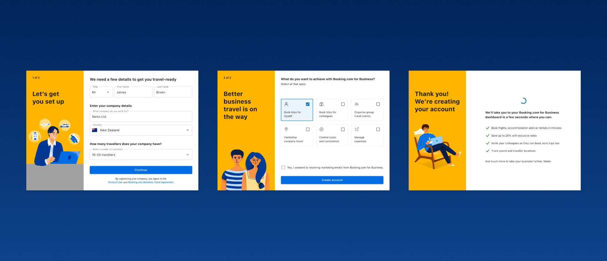

Context & challenge
Booking.com for Business was focused on user acquisition through trust. The hypothesis: friction in the onboarding flow was a direct blocker to conversion. A user who can't register themselves is a user who doesn't adopt the platform, and doesn't generate revenue. The strategic goal was growth. Onboarding was identified as the key lever.
Role & contribution
As Senior Product Designer I owned the end-to-end redesign of the B4B registration flow, from research to a shipped MVP, working alongside Anna and Jacqui (Product Managers), James (Product Owner), and Lucas and Chris on Engineering.
Research & insights
Working with Scott (Lead Researcher) and Keryn (Senior Researcher), we ran 20+ moderated usability sessions to find out not just that users were failing, but why. Four patterns kept surfacing.
Rather than jumping straight to a redesign, we fixed what we could inside the legacy system first, rewriting error messages in clearer language, and tested those fixes to confirm the hypotheses before committing to the larger rebuild.

That sequencing is also where the aggressive descoping and the parallel MVP-against-control structure came from: we removed features that wouldn't deliver immediate onboarding value, and launched an MVP in parallel with the live control so outcomes could be attributed directly to the new design, not external noise. We also built AI-powered prototypes to run usability tests faster and at higher fidelity than traditional wireframes.
Design strategy & approach
We restructured the experience around progressive disclosure, clear state feedback, visible progress markers, and language simplification. Rather than compressing the flow, we optimised cognitive load and clarity per step.

Solution
- Redesigned step logic with clearer grouping of information
- Improved validation states with actionable error messaging
- Introduced clearer progress tracking
- Reduced redundant input friction
- Standardised UI patterns to align with the platform design system
The experience shifted from transactional to guided.

Results & impact
Both success criteria were met or exceeded. The error rate target was a 20% reduction; we delivered 53%. The time target was a 50% reduction; we delivered 46%.
Reflection & learnings
This project reinforced that onboarding is not a form problem, it's a confidence architecture problem. It also informed internal standards around error messaging and progressive disclosure patterns now reused in other flows. Future iterations could incorporate adaptive onboarding based on company size and role segmentation.